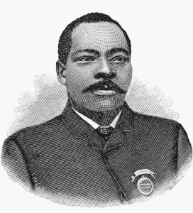
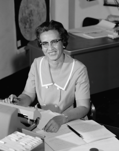
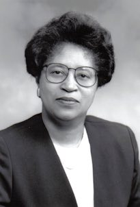

Pioneers in Tech
Black innovators have made significant contributions to the world of technology, shaping the landscape of computer science, engineering, and telecommunications. The following pioneers have played pivotal roles in advancing modern technology.
Granville T. Woods
Known as the "Black Edison," Granville T. Woods was an inventor and electrical engineer who developed over 60 patents, including improvements to railway telegraphs and electrical systems that enhanced train safety and communication. Granville T. Woods, born on April 23, 1856, in Columbus, Ohio, was an inventor and electrical engineer with over 60 patents to his name. After working various jobs, including as a railroad engineer and ship engineer, he studied engineering and electricity in New York City in the late 1870s. Woods went on to create several inventions, most notably the multiplex telegraph (also called the induction telegraph) in 1887, which allowed communication over telegraph wires and improved train safety. His other key inventions included the "troller" for streetcars and the "third rail" power system, both of which transformed electrical rail systems. In 1890, Woods reorganized his company into Woods Electric Co. and continued his research, receiving patents for devices like an improved air-brake system. Known as "Black Edison," he faced challenges from prominent inventors like Thomas Edison but persevered in his innovations. Woods passed away in 1910, leaving behind a legacy of over 15 inventions for electric railways and numerous patents that had a lasting impact on modern electrical technologies.
Katherine Johnson
A brilliant mathematician, Katherine Johnson played a crucial role at NASA, where her calculations helped launch the first American astronauts into space. Her contributions to orbital mechanics were critical to the success of U.S. space missions. Katherine Johnson, born in 1918 in White Sulphur Springs, West Virginia, was a brilliant mathematician who advanced rapidly through school due to her exceptional mathematical abilities. She attended West Virginia State College, where she earned highest honors and found mentorship under math professor W. W. Schieffelin Claytor. After a brief teaching career, she joined the National Advisory Committee for Aeronautics (NACA) in 1953, which later became NASA. Johnson made crucial contributions to space exploration, including trajectory calculations for Alan Shepard’s first American spaceflight and John Glenn’s orbital flight, where her manual calculations ensured the success of the mission. Johnson's work also supported the Apollo Lunar Module and the Space Shuttle, and she authored 26 research reports throughout her career. After retiring in 1986, she was awarded the Presidential Medal of Freedom by President Barack Obama in 2015. She passed away on February 24, 2020, at the age of 101, leaving behind a pioneering legacy in mathematics and space exploration.
Roy L. Clay Sr.
A pioneer in computer engineering, Roy L. Clay Sr. was instrumental in the development of Hewlett-Packard’s computer division and played a key role in shaping Silicon Valley’s early computing industry. Roy L. Clay Sr., born on August 22, 1929, in Kinloch, Missouri, was a pioneering computer scientist and entrepreneur who played a crucial role in shaping Silicon Valley's technological landscape and promoting diversity within the tech industry. Growing up during the Jim Crow era in a home without indoor plumbing, Clay faced significant racial challenges. Undeterred, he became the first African American to graduate from Saint Louis University in 1951 with a Bachelor of Science in Mathematics. In 1958, Clay joined the Lawrence Radiation Laboratory in California, where he developed software to model radiation diffusion following nuclear explosions. His expertise caught the attention of David Packard, co-founder of Hewlett-Packard (HP), leading to Clay's recruitment in 1965 to establish HP's computer division. He directed the development of the HP 2116A, one of the company's first minicomputers, and was instrumental in HP's transition into the computing sector. Beyond his technical achievements, Clay was a trailblazer for African Americans in technology. He founded ROD-L Electronics in 1977, making it the first tech company in Silicon Valley owned by an African American. Clay actively recruited graduates from historically Black colleges and universities, significantly enhancing diversity in the field. His efforts extended to public service as well; he served on the Palo Alto City Council from 1973 to 1979, becoming the first African American member. Roy Clay Sr. passed away on September 22, 2024, at the age of 95 in Oakland, California. His legacy as a pioneering technologist and advocate for diversity continues to inspire future generations in the tech industry.
Dr. Shirley Ann Jackson
A physicist whose groundbreaking research led to developments in telecommunications, Dr. Shirley Ann Jackson’s work paved the way for technologies such as fiber optics, caller ID, and touch-tone phones. Dr. Shirley Ann Jackson, born in 1946 in Washington, D.C., is a pioneering theoretical physicist and the 18th president of Rensselaer Polytechnic Institute. She made history as the first Black woman to earn a Ph.D. from MIT, where she also helped establish the Black Student Union and played a key role in increasing Black student enrollment. After earning her doctorate in 1973, Jackson worked at Fermilab and later joined Bell Laboratories, eventually transitioning into public policy. In 1995, she was appointed as the first African American chair of the U.S. Nuclear Regulatory Commission (NRC) , where she implemented significant reforms in planning, budgeting, and performance management. Jackson has also held notable positions in various governmental boards, including the President’s Council of Advisors on Science and Technology under President Obama. Throughout her career, she has received numerous accolades, including the National Medal of Science in 2014. Dr. Jackson continues to lead Rensselaer Polytechnic Institute, advancing it into a world-class research institution.
Mark Dean
An inventor and computer scientist, Mark Dean co-developed the ISA bus and played a key role in creating the first personal computer at IBM. He holds multiple patents for computer architecture innovations. Mark Dean, born on March 2, 1957, in Jefferson City, Tennessee, is renowned for his pivotal role in the development of personal computing. A gifted student and athlete, he graduated with honors from the University of Tennessee in 1979, later joining IBM. Dean contributed to the creation of the IBM PC and holds several patents, including those for color graphics adapters. His work significantly impacted the consumer computing industry, helping IBM dominate the market. Later, as vice president of IBM Research, he spearheaded the Blue Gene project, developing a supercomputer that revolutionized high-performance computing, earning recognition with the National Medal of Technology Innovation in 2009. Dean's leadership extended beyond technology innovation; he later ran IBM's Almaden Research Center and became vice president of global strategy and operations. After leaving IBM in 2013, he returned to the University of Tennessee as the John Fisher Distinguished Professor, where he mentors the next generation of engineers. Dean’s career is marked by groundbreaking achievements in both personal computing and supercomputing, demonstrating a legacy of invention, leadership, and mentorship that has shaped the tech industry.